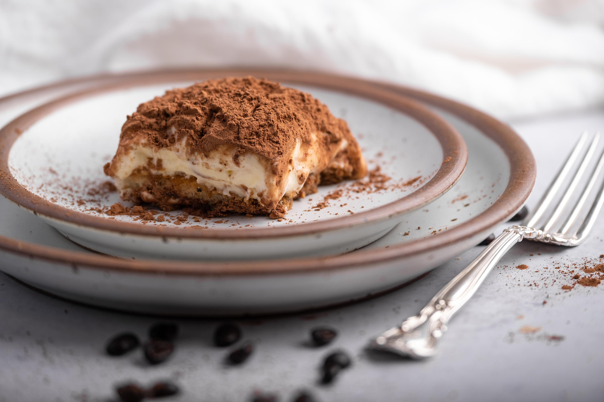

tiramisu della livia

Description
It is best to make this dish the day before serving so that the tiramisu has ample time to set. It also freezes well.
You can extend the recipe to provide more servings by folding whipped cream into the mascarpone along with the egg whites.
Ingredients
- 4 large eggs, separated
- 1/2 cup sugar
- 1 pound mascarpone cheese
- 1 cup crushed amaretti cookies (optional)
- 2 cups brewed espresso coffee
- 1 tablespoon dark rum
- One 7-ounce package ladyfinger cookies
- 2 tablespoons unsweetened cocoa powder
Steps
- In a medium-size bowl, beat the egg yolkes with 6 tablespoons of the sugar until foamy and pale. Beat in the mascarpone until smooth. Set aside.
- In a large bowl, whip the egg whites with an electric mixer. When they are frothy, add the remaining 2 tablespoons of sugar.
Continue beating until they hold stiff peaks. Fold the egg whites into the mascarpone mixture, then fold in the crushed amaretti cookies, if using. Set aside.
- Mix the espresso with the rum in a shallow owl. Soak each ladyfinger, one at a time, in this mixture until it has softened slightly and absorbed some of the liquid.
Arrange the cookies in a 11 x 7 x 2-inch baking dish to form a tightly packed single layer. Use pieces of broken cookies to fill in any gaps.
- Spread the mascarpone cream mixture evenly over the cookies. Shake the cocoa through a fine-mesh sieve to evenly coat the top. Refrigerate to set for at least 2 hours before serving.